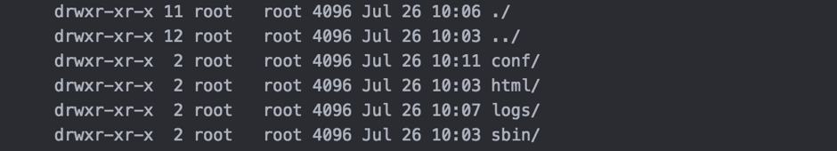
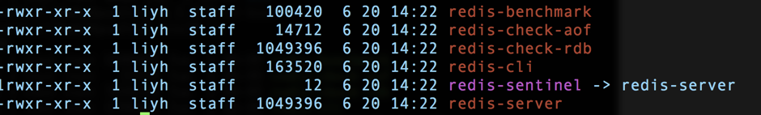
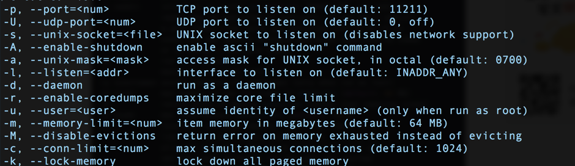
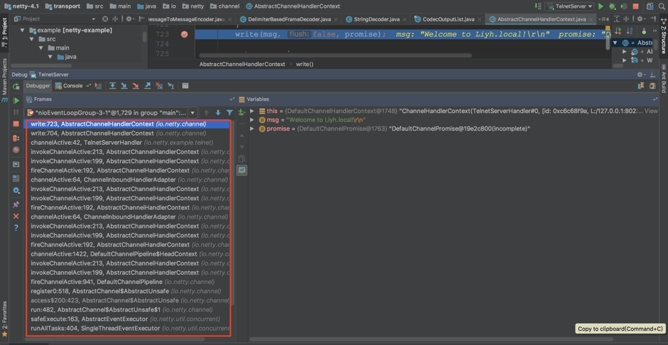

- 00 开篇词 照着做，你也能成为架构师！.md.html
- 01 架构到底是指什么？.md.html
- 02 架构设计的历史背景.md.html
- 03 架构设计的目的.md.html
- 04 复杂度来源：高性能.md.html
- 05 复杂度来源：高可用.md.html
- 06 复杂度来源：可扩展性.md.html
- 07 复杂度来源：低成本、安全、规模.md.html
- 08 架构设计三原则.md.html
- 09 架构设计原则案例.md.html
- 10 架构设计流程：识别复杂度.md.html
- 11 架构设计流程：设计备选方案.md.html
- 12 架构设计流程：评估和选择备选方案.md.html
- 13 架构设计流程：详细方案设计.md.html
- 14 高性能数据库集群：读写分离.md.html
- 15 高性能数据库集群：分库分表.md.html
- 16 高性能NoSQL.md.html
- 17 高性能缓存架构.md.html
- 18 单服务器高性能模式：PPC与TPC.md.html
- 19 单服务器高性能模式：Reactor与Proactor.md.html
- 20 高性能负载均衡：分类及架构.md.html
- 21 高性能负载均衡：算法.md.html
- 22 想成为架构师，你必须知道CAP理论.md.html
- 23 想成为架构师，你必须掌握的CAP细节.md.html
- 24 FMEA方法，排除架构可用性隐患的利器.md.html
- 25 高可用存储架构：双机架构.md.html
- 26 高可用存储架构：集群和分区.md.html
- 27 如何设计计算高可用架构？.md.html
- 28 业务高可用的保障：异地多活架构.md.html
- 29 异地多活设计4大技巧.md.html
- 30 异地多活设计4步走.md.html
- 31 如何应对接口级的故障？.md.html
- 32 可扩展架构的基本思想和模式.md.html
- 33 传统的可扩展架构模式：分层架构和SOA.md.html
- 34 深入理解微服务架构：银弹 or 焦油坑？.md.html
- 35 微服务架构最佳实践 - 方法篇.md.html
- 36 微服务架构最佳实践 - 基础设施篇.md.html
- 37 微内核架构详解.md.html
- 38 架构师应该如何判断技术演进的方向？.md.html
- 39 互联网技术演进的模式.md.html
- 40 互联网架构模板：存储层技术.md.html
- 41 互联网架构模板：开发层和服务层技术.md.html
- 42 互联网架构模板：网络层技术.md.html
- 43 互联网架构模板：用户层和业务层技术.md.html
- 44 互联网架构模板：平台技术.md.html
- 45 架构重构内功心法第一式：有的放矢.md.html
- 46 架构重构内功心法第二式：合纵连横.md.html
- 47 架构重构内功心法第三式：运筹帷幄.md.html
- 48 再谈开源项目：如何选择、使用以及二次开发？.md.html
- 49 谈谈App架构的演进.md.html
- 50 架构实战：架构设计文档模板.md.html
- 51 如何画出优秀的软件系统架构图？.md.html
- 加餐｜业务架构实战营开营了.md.html
- 加餐｜单服务器高性能模式性能对比.md.html
- 加餐｜扒一扒中台皇帝的外衣.md.html
- 如何高效地学习开源项目 华仔，放学别走！ 第3期.md.html
- 新书首发 《从零开始学架构》.md.html
- 架构专栏特别放送 华仔，放学别走！ 第2期.md.html
- 架构专栏特别放送 华仔，放学别走！第1期.md.html
- 架构师必读书单 华仔，放学别走！ 第5期.md.html
- 架构师成长之路 华仔，放学别走！ 第4期.md.html
- 结束语 坚持，成就你的技术梦想.md.html
- 捐赠
如何高效地学习开源项目 华仔，放学别走！ 第3期
你好，我是华仔。今天这期“特别放送”，我想和你聊聊如何高效地学习开源项目，一方面澄清开源项目学习过程中的几个误区，另一方面谈谈我自己具体实践时的一套方法论。
得益于开源运动的蓬勃发展，众多技术顶尖的公司、团队或者个人通过开源的方式向技术社区贡献了许多优秀的开源项目，一方面大大促进了整体技术的发展，另一方面大大减轻了中小公司和团队在技术方面的投入压力，让团队能够更加聚焦于业务。
开源项目对团队和业务有很大好处，但对于技术人员来说，如果只是简单的采取“拿来主义”，那就变成一个陷阱：看似很快的用开源项目实现了需求，但自己的技术水平并没有什么提升；甚至可能出现看起来用了很多开源项目，知道很多项目名称，但技术水平止步不前的窘境。
因此，对于开源项目，不能简单的采取“拿来主义”，而要比较深入的去学习开源项目，做到“知其然，知其所以然”，一方面是为了更好地应用这些开源项目，另一方面也是为了通过学习优秀的开源项目来提升自己的能力。
很多技术同学确实也想深入学习一些业界成熟和优秀的开源项目，例如Nginx、Redis、Netty等，但是在具体实践的时候，常常因为一些不正确的观点而误入歧途，例如：
- 只有开发这些开源项目的人才能真正理解，我没法参与这个项目开发，因此我很难深入理解。
- 我的项目没有用Redis，不用的话很难深入理解。
- 数据结构和算法很重要，所以我只要研究其数据结构和算法就够了，例如Nginx用的红黑树。
- “Talk is cheap, show me the code”，一头扎进源码逐行阅读。
这些观点要么让自己望而生畏从而轻易放弃，要么让自己浪费大量时间而没有多大收获。那究竟要怎样做才是正确的呢？下面我结合自己的经验谈谈我对如何学习开源项目的看法。
- 首先，需要树立正确的观念：不管你是什么身份，都可以从开源项目中学到很多东西。
例如，要理解Redis的网络模型，我们不需要成为Redis的开发者，也不需要一定要用到Redis，只要具备一定的网络编程基础，再通过阅读Redis的源码，都可以学习Redis这种单进程的Reactor模型。
- 其次，不要只盯着数据结构和算法，事实上这两点在学习开源项目的时候并没有那么重要。
例如，Nginx使用红黑树来管理定时器，对于绝大部分人来说，只要知道这点就够了，并不需要去研究Nginx实现红黑树的源码是如何写的，除非你需要修改这部分，但我认为极少人会有这个需求。
- 第三，采取“自顶向下”的学习方法，源码不是第一步，而是最后一步。
不要一上来就去看源码，而是要基本掌握了功能、原理、关键设计之后再去看源码，看源码的主要目的是为了学习其代码的写作方式，以及关键技术的实现。
例如，Redis的RDB持久化模式“会将当前内存中的数据库快照保存到磁盘文件中”，那这里所谓的“数据库快照”到底是怎么做的呢？在Linux平台上其实就是fork一个子进程来保存就可以了；那为何fork子进程就生成了数据库快照了呢？这又和Linux的父子进程机制以及copy-on-write技术相关了。
通过这种方式，既能够快速掌握系统设计的关键点（Redis的RDB模式），又能够掌握具体的编程技巧（内存快照）。
接下来我详细谈谈“自顶向下”的学习方法和步骤。
第一步：安装
很多人看到“安装”这个步骤都可能会觉得有点不以为然：“不就是对照手册执行一下命令么，没什么技术含量，用的时候装一下就可以了”。事实上，安装步骤远远不止这么简单，通过具体的安装过程，你可以获取到如下一些关键信息：
- 这个系统的依赖组件，而依赖的组件是系统设计和实现的基础
以Nginx为例，源码安装Nginx依赖的库有pcre、pcre-devel、openssl、openssl-devel、zlib，光从名字上看都能够了解一些信息，例如openssl可能和https有关，zlib可能和压缩有关。
再以Memcache为例，最大的依赖就是libevent，而根据libevent是一个高性能的网络库，我们就能大概推测Memcache的网络实现应该是Reactor模型的。
- 安装目录也能够提供一些使用和运行的基本信息
例如，Nginx安装完成后，目录如下：

这个目录提供的信息有：conf是存放配置文件的，logs是存放日志的，sbin是运行程序，但是html是什么呢？这个疑问会促使你继续去研究和学习。
再来看看Redis，安装完成后，目录下只有一个bin目录，具体如下：

我相信大部分人看到这目录都会感到有点惊讶：这也太简单了吧，尤其是与Nginx相比！因此也会自然而然的有一些疑问，例如Redis如何配置？Redis日志保存在哪里？这些疑问同样会促使你继续去研究和学习，带着问题去学习效率是最高的。
- 系统提供了哪些工具方便我们使用
同样以Redis为例，你可以看到redis-benchmark、redis-check-aof等程序，从名字能够大概猜出这些工具的基本使用场景，而这些工具在后面故障定位和处理、性能测试等场景可能非常方便。
第二步：运行
安装完成后，我们需要真正将系统运行起来，运行系统的时候有两个地方要特别关注：命令行和配置文件，它们主要提供了两个非常关键的信息：系统具备哪些能力和系统将会如何运行。这些信息是我们窥视系统内部运行机制和原理的一扇窗口。
例如，下面是Memcache的启动参数一部分： 
通过这几个启动参数，你可以获取如下一些信息：
- Memcache支持UNIX socket通信和TCP通信。
- Memcache可以指定内存大小。
- lock memory看起来和内存有关，但具体是什么意思？配置和不配置有什么区别么？
通常情况下，如果我们将每个命令行参数和配置项的作用和原理都全部掌握清楚了的话，基本上对系统已经很熟悉了。我的一个习惯是不管三七二十一，先把所有的配置项全部研究一遍，包括配置项的原理、作用、影响，并且尝试去修改配置项然后看看系统会有什么变化。例如，将Memcache的“–conn-limit”改为1后，查看多个连接请求时Memecache会返回什么错误、记录什么日志等。
第三步：原理研究
完成前两个步骤后，我们对系统已经有了初步的感觉和理解，此时可以更进一步去研究其原理。其实在研究命令行和配置项的时候已经涉及一部分原理了，但是还不系统，因此我们要专门针对原理进行系统性的研究。这里的关键就是“系统性”三个字，怎么才算系统性呢？主要体现在如下几个方面：
- 关键特性的基本实现原理
每个流行的开源项目之所以能够受到大众的欢迎，肯定是有一些卖点的，常见的有高性能、高可用、可扩展等特性，那到底这些项目是如何做到其所宣称的那么牛的呢？这些牛X的技术实现就是我们要学习的地方。
例如，Memcache的高性能具体是怎么做到的呢？首先是基于libevent实现了高性能的网络模型，其次是内存管理Slab Allocator机制。为了彻底理解Memcache的高性能网络模型，我们需要掌握很多知识：多路复用、Linux epoll、Reactor模型、多线程等，通过研究Memcache的高性能网络模型，我们能够学习一个具体的项目中如何将这些东西全部串起来实现了高性能。
再以React为例，Virtual DOM的实现原理是什么、为何要实现Virtual DOM、React是如何构建Virtual DOM树、Virtual DOM与DOM什么关系等，通过研究学习Virtual DOM，即使不使用React，我们也能够学习如何写出高性能的前端的代码。
- 优缺点对比分析
这是我想特别强调的一点，只有清楚掌握技术方案的优缺点后才算真正的掌握这门技术，也只有掌握了技术方案的优缺点后才能在架构设计的时候做出合理的选择。
优缺点主要通过对比来分析，即：我们将两个类似的系统进行对比，看看它们的实现差异，以及不同的实现优缺点都是什么。
典型的对比有Memcache和Redis，例如（仅举例说明，实际上对比的点很多），Memcache用多线程，Redis用单进程，各有什么优缺点？Memcache和Redis的集群方式，各有什么优缺点？
即使是Redis自身，我们也可以对比RDB和AOF两种模式的优缺点。
在你了解了什么是“系统性”后，我来介绍一下原理研究的手段，主要有三种：
- 通读项目的设计文档：例如Kafka的设计文档，基本涵盖了消息队列设计的关键决策部分；Disruptor的设计白皮书，详细的阐述了Java单机高性能的设计技巧。
- 阅读网上已有的分析文档：通常情况下比较热门的开源项目，都已经有非常多的分析文档了，我们可以站在前人的基础上，避免大量的重复投入。但需要注意的是，由于经验、水平、关注点等差异，不同的人分析的结论可能有差异，甚至有的是错误的，因此不能完全参照。一个比较好的方式就是多方对照，也就是说看很多篇分析文档，比较它们的内容共同点和差异点。
- Demo验证：如果有些技术点难以查到资料，自己又不确定，则可以真正去写Demo进行验证，通过打印一些日志或者调试，能清晰的理解具体的细节。例如，写一个简单的分配内存程序，然后通过日志和命令行（jmap、jstat、jstack等）来查看Java虚拟机垃圾回收时的具体表现。
第四步：测试
通常情况下，如果你真的准备在实际项目中使用某个开源项目的话，必须进行测试。有的同学可能会说，网上的分析和测试文档很多，直接找一篇看就可以了？如果只是自己学习和研究，这样做是可以的，因为构建完整的测试用例既需要耗费较多时间，又需要较多机器资源，如果每个项目都这么做的话，投入成本有点大；但如果是要在实践项目中使用，必须自己进行测试，因为网上搜的测试结果，不一定与自己的业务场景很契合，如果简单参考别人的测试结果，很可能会得出错误的结论。例如，开源系统的版本不同，测试结果可能差异较大。同样是K-V存储，别人测试的value是128字节，而你的场景value都达到了128k字节，两者的测试结果也差异很大，不能简单照搬。
测试阶段需要特别强调的一点就是：测试一定要在原理研究之后做，不能安装完成立马就测试！原因在于如果对系统不熟悉，很可能出现命令行、配置参数没用对，或者运行模式选择不对，导致没有根据业务的特点搭建正确的环境、没有设计合理的测试用例，从而使得最终的测试结果得出了错误结论，误导了设计决策。曾经有团队安装完成MySQL 5.1后就进行性能测试，测试结果出来让人大跌眼镜，经过定位才发现innodb_buffer_pool_size使用的是默认值8M。
第五步：源码研究
源码研究的主要目的是学习原理背后的具体编码如何实现，通过学习这些技巧来提升我们自己的技术能力。例如Redis的RDB快照、Nginx的多Reactor模型、Disruptor如何使用volatile以及CAS来做无锁设计、Netty的Zero-Copy等，这些技巧都很精巧，掌握后能够大大提升自己的编码能力。
通常情况下，不建议通读所有源码，因为想掌握每行代码的含义和作用还是非常耗费时间的，尤其是MySQL、Nginx这种规模的项目，即使是他们的开发人员，都不一定每个人都掌握了所有代码。带着明确目的去研究源码，做到有的放矢，才能事半功倍，这也是源码研究要放在最后的原因。
对于一些基础库，除了阅读源码外，还可以自己写个Demo调用基础库完成一些简单的功能，然后通过调试来看具体的调用栈，通过调用栈来理解基础库的处理逻辑和过程，这比单纯看代码去理解逻辑要高效一些。例如，下面是Netty 4.1版本的telnet服务器样例调试的堆栈，通过堆栈我们可以看到完整的调用栈： 
时间分配
前面介绍的“自顶向下”5个步骤，完整执行下来需要花费较长时间，而时间又是大部分技术人员比较稀缺的资源。很多人在学习技术的时候都会反馈说时间不够，版本进度很紧，很难有大量的时间进行学习，但如果不学习感觉自己又很难提升？面对这种两难问题，具体该如何做呢？
通常情况下，以上5个步骤的前3个步骤，不管是已经成为架构师的技术人员，还是立志成为架构师的技术人员，在研究开源项目的时候都必不可少；第四步可以在准备采用开源项目的时候才实施，第五步可以根据你的时间来进行灵活安排。这里的“灵活安排”不是说省略不去做，而是在自己有一定时间和精力的时候做，因为只有这样才能真正理解和学到具体的技术。
如果感觉自己时间和精力不够，与其蜻蜓点水每个开源项目都去简单了解一下，还不如集中精力将一个开源项目研究通透，就算是每个季度只学习一个开源项目，积累几年后这个数量也是很可观的；而且一旦你将一个项目研究透以后，再去研究其他类似项目，你会发现自己学习的非常快，因为共性的部分你已经都掌握了，只需要掌握新项目差异的部分即可。
今天，我给你分享了我对于学习开源项目的看法和步骤，希望对你有所帮助。如果你在工作、学习中遇到什么问题，不论是技术、管理或者其他方面，欢迎在“特别放送”里给我留言，可能你的问题就是“华仔，放学别走！第4期”的主题。
© 2019 - 2023 Liangliang Lee. Powered by gin and hexo-theme-book.